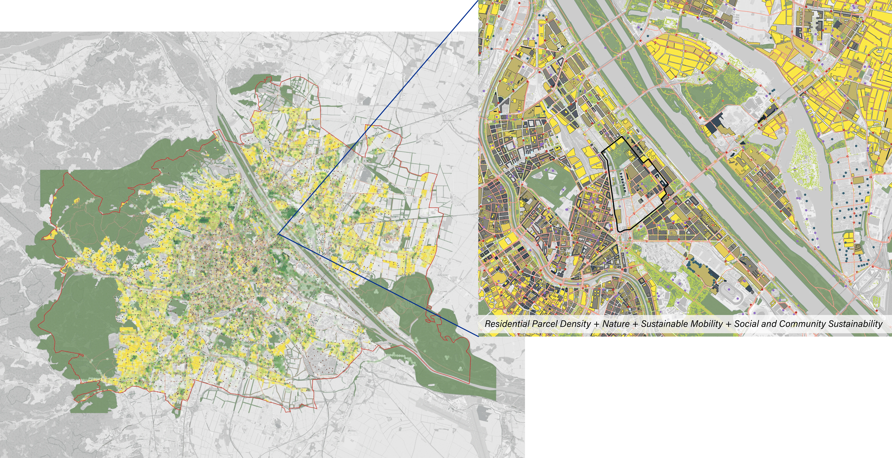

Density of Inhabitation
1. Parcel size
2. Gross plot ration
Regenerative City is an ongoing, cross-disciplinary research project
exploring how cities can move beyond sustainability toward regeneration.
Through expert interviews and spatial analysis of case studies in Singapore, Vienna, and other cities,
the project identifies key characteristics and strategies to inform future regenerative
urban development.
My involvement focused on the Vienna case study, where I compiled and analysed spatial data from official
Austrian datasets, OpenStreetMap, and WEkEO. Using indicators such as density, nature integration,
sustainable mobility, and access to community services, I evaluated the regenerative potential of
residential neighbourhoods and contributed to the project's comparative research framework.

Evidence-based Research and Spatial Analysis
Singapore
July 2025 - Present
Researcher
The main goal of the case study is to develop an indicator-based framework for assessing
the regenerative potential of residential parcels in Singapore and Vienna, with plans to
expand to other cities.
The framework integrates ecological, social, and mobility perspectives into a unified
spatial analysis, organized around five key thematic dimensions.
1. Parcel size
2. Gross plot ration
Mapping of parcels' access to:
1. Parks
2. Nature
3. Greenery
Calculation of:
1. Tree canopy coverage
2. Tree count
Mapping of parcels' access to:
1. Public transportation
2. Cycling network
Mapping of parcels' access to:
1. Community gardens
2. Sports facilities
3. Childcare services

Map of Vienna showing the overlay of all regenerative indicators, alongside a zoomed-in view of the
Nordbahnhof site — a former train station now being redeveloped into a multifunctional,
sustainable district with affordable housing, selected as one of the key case study sites.
This analysis serves as a preliminary assessment and may not fully capture real-world conditions, as
certain micro-scale factors influencing livability and accessibility are not represented. Future research
using network-based or higher-resolution data could provide a more accurate and nuanced
understanding.
Map showing the compiled regenerative scores of residential parcels across five indicators: density of inhabitation, access to nature, density of nature, sustainable
mobility, and access to social and community services.
While most parcels perform well, some limitations exist—particularly the use of static
datasets and reliance on OpenStreetMap to supplement Austria’s official data, which
may introduce inaccuracies due to its ground-up, community-based data collection approach.
.gif)